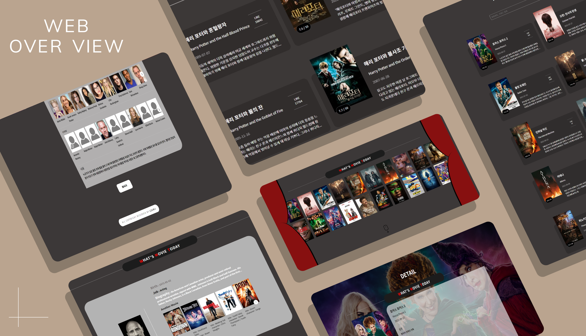

WMT
Scroll Down
깃허브
사이트 바로가기
사용한 SKILLS
REACT , SASS , JAVA-SCRIPT
제작기간
10일 소요
제작 기여도
100% ( 개인프로젝트 )
학습 내용
REACT를 기반으로 API 데이터 서버의 기본을 이해하기 위해 TMDB의 API를 활용하여 실시간 데이터 렌더링을 익혔으며 ,REACT에서의 LINK, useEffect 함수 등 다양한 기본함수를 활용하여 REACT를 통한 페이지 구축 기능을 함유하였습니다.
